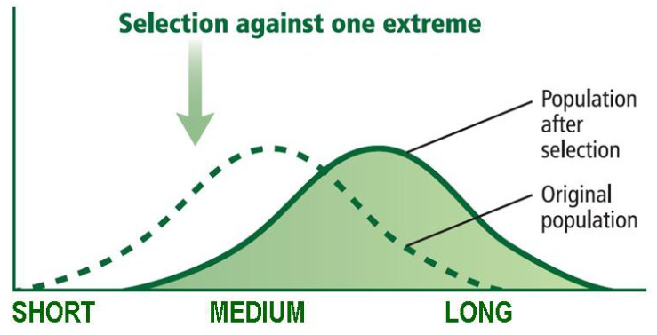
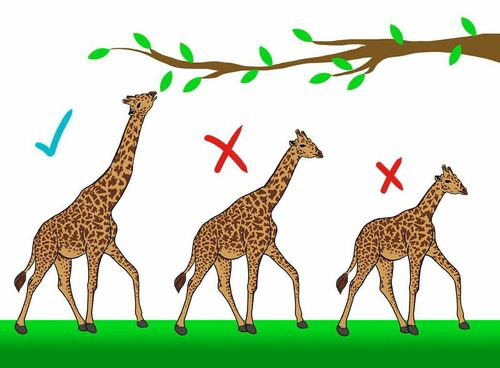
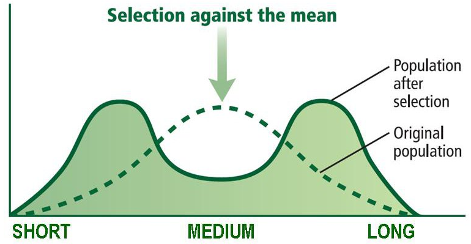
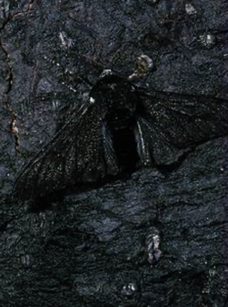
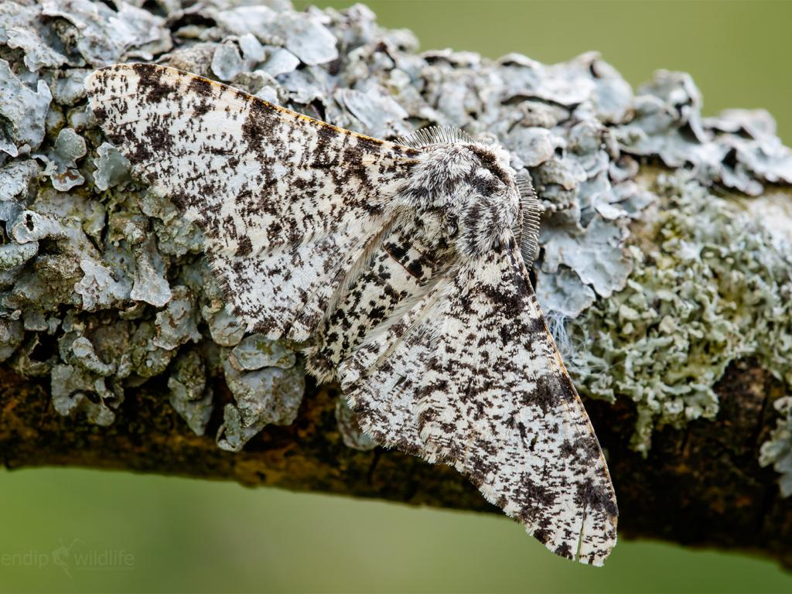
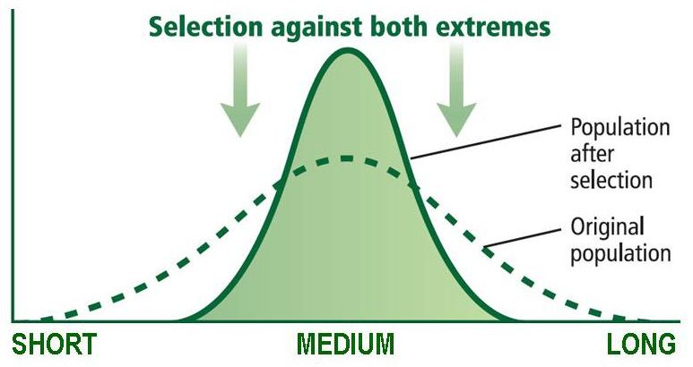
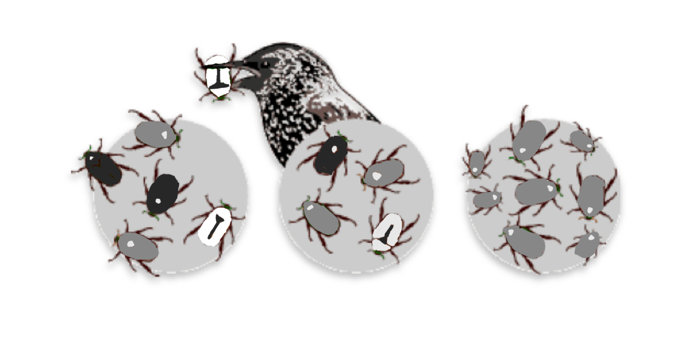

What is natural selection?
Individuals with variations better suited to environments pass more alleles to the next generation.
The most common types of natural selection are directional, disruptive, and stabilizing selection.
Directional selection
One extreme phenotype is favored. (Ex. Giraffe neck size depending on the height of trees)
Disruptive selection
Both extreme phenotypes are favored. (Ex. Dark and light-colored moths are able to hide in their environment better than gray moths)
 Stabilizing selection
The intermediate phenotype is favored. (Ex. Medium-colored beetles better camouflaged from predators)
